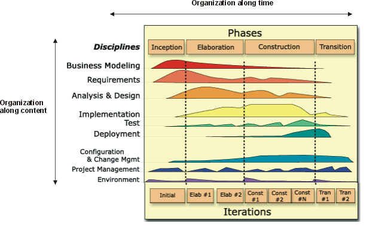

Development Case: Lifecycle Model and Disciplines
Topics
Background 
[The background below is general and suitable for most development cases. It can be removed if required.]
This section describes how the process structure has been amended. The Rational Unified Process is organized in both the time (the life cycle model, phases and iterations) and content (the disciplines to be used) as shown by the "iteration cycle graph" below.

For details of the phases of the Rational Unified Process see RUP: Phases and for details of the disciplines defined by the Rational Unified Process see RUP: Disciplines.
The Lifecycle Model can also be tuned by the "High Level Plan" (see the section titled "Project Plan" in the project's RUP Artifact: Software Development Plan) and this is usually sufficient when the configuration is minor and the development case is targeted at a single project.
Each iteration consists of planning, requirements analysis, design, implementation, and testing, in various proportions depending on where the iteration is in the software lifecycle. Early iterations focus on requirements analysis and architectural design, whereas late iterations focus more on design, implementation, and testing. The "iteration cycle graph" below illustrates typical proportions. Thus, part of the Iteration Plan is to decide how the various disciplines are to be exercised for each iteration.
The Process Architecture
[Describe any changes to the process architecture here. The following text is suitable for most configurations.]
The process architecture adopted is that of the Rational Unified Process.
In this architecture there is a clear separation between the time dimension of a project (represented by the phases and milestones of the process lifecycle model, see the RUP Concept: Phases for more details) and the process components (the disciplines, workflow details, roles, activities, artifacts, templates and guidelines that define the static elements of the process).
The notation used to describe the Rational Unified Process is also used to describe any extensions and specializations made by the development case.
See the RUP: Key Concepts for more information on these concepts and their respective notational representations.
Lifecycle Model
[Describe any changes to the lifecycle model (the organization of the process over time). The following text is suitable for most configurations.]
The lifecycle adopted is that defined by the Rational Unified Process (see RUP Concept: Phases for details of the phases and their related milestones).
Disciplines
[If any additional disciplines are omitted, added or overridden these changes should be identified here.
The table below should be completed to reflect the disciplines included in the process configuration.]
The following table summarizes the disciplines included in the process defined by this development case.
| Discipline Configuration (from Development Case) |
Base Discipline / Source (from Knowledge Base) |
Comments |
| Business Modeling | RUP Discipline: Business Modeling | |
| Requirements |
RUP Discipline: Requirements | |
| Analysis and Design | RUP Discipline: Analysis & Design | |
| Implementation | RUP Discipline: Implementation | |
| Test | RUP Discipline: Test | |
| Deployment | RUP Discipline: Deployment | |
| Environment | RUP Discipline: Environment | |
| Project Management |
RUP Discipline: Project Management | |
| Configuration & Change Management | RUP Discipline: Configuration & Change Management |

Summary
[The lifecycle and discipline configuration should be summarized in the form of an iteration cycle graph. This graph will then act as the visual overview of the configuration and a visual index to the development case. It will be included in a number of pages (this page, the development case index etc) and is presented as its own (included) page. The graphic below can be found defined on the devcase\icg.htm page.]
The process architecture, lifecycle model and disciplines are succinctly summarized by the iteration cycle graph below:

click on an element for more information
From this diagram you can navigate to the discipline sections of the development case.